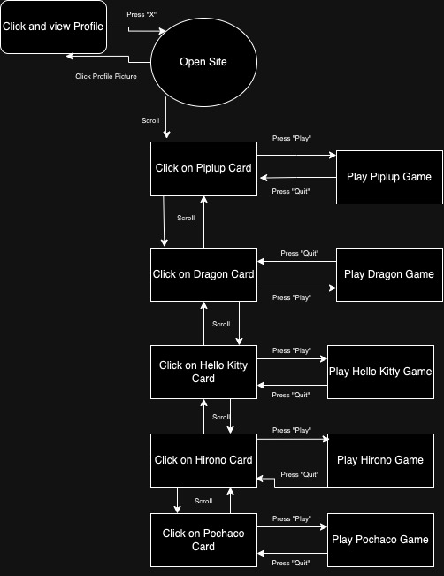

Functional Diagram
I plan to add small, interactive "mini-games" for each figurine. When one clicks on a figurine's card and sees its overlay, there will be an option in the overlay to press a button "play" that takes them to an interactive experience via p5 JS.
This will make my project more engaging since it dives deeper into the gaming theme my original Every Picture project had. I intimidated the Nintendo Swtich Home screen layout and explained a gaming concept in the first iteration,but this time I will try to actually implement a game, or simple demo, of each figurine's game concept. Overall, this added functionality will make the user feel as if they are navigating a simple home gaming console with actual mini-games.